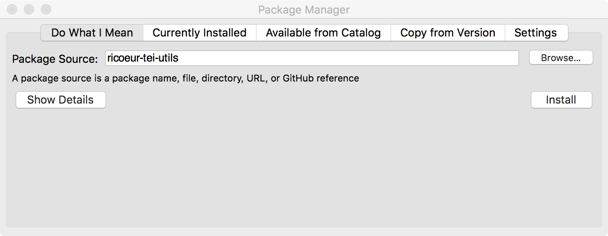
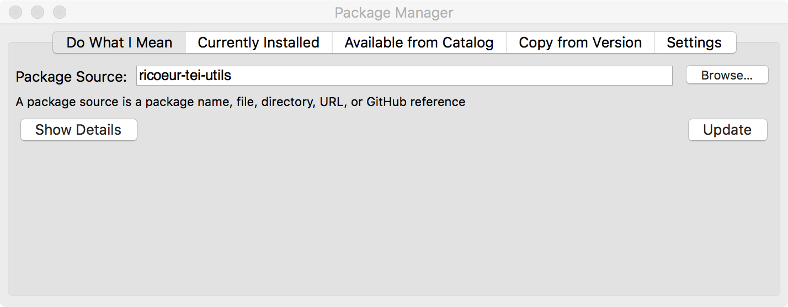

1 Installing & Updating This Library
Installing this library will also install the tools documented under Tools.
For advanced users: If you use Mac OS, it is ok to use the “cask” for the Homebrew package manager, but note that the “minimal-racket” Homebrew formula is currently unmaintained and should be avoided. If you use Ubuntu, it is ok to use the Racket PPA. However, neither of these approaches are recommended.
After you have installed Racket, you then must install this library as a Racket package. For most users, we recommend the following simple method that doesn’t require knowing about Git or the command line. For more advanced users and those wishing to contribute to the development of this library, an alternative process is given under Additional Installation Details.
Open the program DrRacket, which you installed as part of the Racket distribution.
Choose File|Package Manager…, which will open a new window labeled Package Manager.
In the field labeled Package Source, enter the exact text ricoeur-tei-utils. Press the Install button. 
Later, to install updated versions of this library, repeat the above steps. Instead of an Install button, there will be an Update button, which will download and install any updates. 
1.1 Additional Installation Details
Specifically, binaries are provided for platforms where (matching-platform? "win32\\x86_64") returns #t.
sudo echo "/Applications/Racket v7.4/bin" > /etc/paths.d/racket |
make install: Installs the package. This is needed only when you install a new version of Racket.
make update: Checks for updates to the package and tries to install them, which may involve updating this package’s dependencies. “Updates” are changes to the package source listed in the Racket package catalog: currently, that is the “master” branch of the canonical Git repository. Updates are pulled with the equivalent of git pull --ff-only so they won’t overwrite any local changes.
make setup: Builds compiled files, executables, documentation, etc. for this library, as needed. Unlike make update, make setup doesn’t look for upstream updates: use make setup when you want to explicitly build your local changes.
1.2 Status of This Library
This library is not stable. Digital Ricœur is under ongoing, iterative development. While we have worked to design this library so that small iterations will necesitate only small changes in our tools that rely on it, we will not hesitate to make breaking changes when our requirements change: indeed, we actively plan to do so.
Many parts of this library have embedded assumptions that are very specific to the needs of our project. For example, our TEI XML documents are required to have an author element with an xml:id of "ricoeur".
Despite the above, we are very eager to collaborate with others! If there is some functionality from ricoeur/tei that you are interested in using, we encourage you to get in touch. We would be delighted to work together on factoring out reusable components.